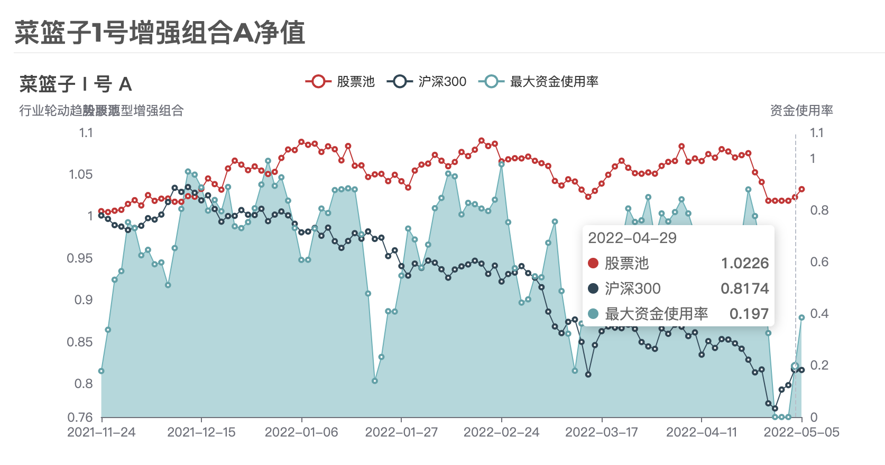

预期之内的趋势，超预期的回撤控制（2022复盘③）
¶论净值，我们还是能吹一波的
截止到4月底，2022年的沪深300的参考净值下跌了0.1881，目前是0.8174。
菜篮子 I 号组合净值收0.9398，跌0.1296。跑赢沪深300 0.0585基点。
菜篮子 I 号增强净值收1.0226，跌0.0468。跑赢沪深300 0.1350基点。
说跑赢没啥意义，就说谁回撤的少吧！
据钛媒体整理一季度数据显示，3327只主动权益类公募基金平均收益为-15.04%，前4月会更差一些。前4个月增强组合收益-4.37%，0.0468的净值回撤，还是能够吹一波的。
菜篮子 I 号增强组合净值当前为1.0226。可以说现阶段我们的策略是成功的。大概是上周的样子吧，有朋友询问我们菜篮子的净值情况，并询问是否有意出售，有友商在高价寻找适合的量化策略，只能说，2022年的市场很难，这两年很牛的基金净值我想大家也都看到了。

¶关注主线，持续优化
¶控制仓位的优势逐步显现
菜篮子 I 号和增强的差别就是在不下马交易的前提下，某些特定的条件下控制仓位。近3个月来，控仓的效果逐渐显现了出来。增强了 0.0828 基点。这部分增强无论在什么时候都是相关可观的回撤控制。
如乔治.索罗斯所说：如果你经营状况欠佳，那么，第一步你要减少投入，但不要收回资金。当你重新投入的时候，一开始投入数量要小。现在来看，增强组合表现还是不错的，状况欠佳，减少投入，控制回撤。
¶不要被噪音影响了判断
4月25日”千股跌停“那天，增强组合被动空仓，所有的持仓都满足了-6%的止损条件，错过了之后反弹的前2天，但是这种反弹我们把它看做趋势中的噪音。其实4月25日这一周，3天的振幅都很大，都不是在这个阶段能预判出来的振幅。究其原因，都是外力导致。
- 4月25日，日本政府宣布无限回购国债，引发市场对于中国金融政策的担心，对脆弱的市场完成”千股跌停“的致命一击。
- 4月27日，有消息担忧”雪球“的强制赎回会进一步打击市场，从而导致部分公募基金进入平仓线，进而引发一轮踩踏，午后，金融股拉升，强行护盘，拉升指数及公募基金净值。
- 4月29日，上午政治局会议，下午复盘后，沪深以互联网平台概念为首的股票秒板，券商跟进拉升指数。从而完成了一次漂亮的反转。
如果没有4月25日的暴力下跌，27日、29日也不会有暴力拉升。在我们眼里，这些都是主线过程中的噪音。至少现在，我们依然维持上次复盘的观点。
¶后市暂时不可说，等5月份过了在看
上次复盘的时候是3月8日，菜篮子 I 号净值跌破1.0的时候，当时我们提到：市场将开始为期2个月的下跌过程，乐观的说要到4月底5月初在评估是否有回暖的迹象，悲观的说，指数会复制2018年的走势。目前来看，暂时回暖了，超预期的是4月份的最后一周。现在看5月份问题不会太大，最弱也是个震荡修复的行情。至于5月份之后是下跌中继还是趋势反转，真的要等到5月份过了之后再评估。现在不可预测的因素太多了。
¶较大的噪音也得重视一下
- 中美十年国债利差：目前在0值之间震荡了，当再次形成区间放大趋势的时候，可能会是直接变盘的一个因素，可能是正向放大，也可能是负向放大。是否放大，取决于国内金融政策。毕竟美联储的加息预期是年内7次。
- 美国中期选举与拜登的身体健康：如果现在有消息说拜登挂了，我都不会怀疑是假消息；而战争财的分配是中期选举的关键，这都会影响后面美国的策略和运转。
- 俄乌战争对我们的影响不会太大：就目前形式来看，最大的变数会是波兰和美国中期选举结果，德左都不算什么了。否则就是俄罗斯按部就班，演员退场（怎么退的？大概率还是自我修养不够，分赃不均，被制裁了），维和部队进场，制裁持续。
¶我们都有美好的未来
大概8月底9月初的样子吧，毕竟那时候是盛夏，疫情没有了；中报也过去了，Q2的雷都爆掉了；盛会即将召开，一切会好起来的。
做A股，累啊，要学学曹相国。